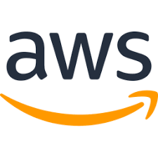

Hardware Components
-
Modem + Router
Purpose: Connects the internal network to the internet and manages network traffic.
Benefits: Provides DHCP, firewall, and VLAN support; essential for secure, segmented communication.
-

Managed Switch
Purpose: Directs internal data traffic between devices and supports VLANs and PoE.
Benefits: Increases network control, enables segmentation, and powers devices like access points or phones without extra power cables.
-

Printer
Purpose: Shared network printer for all staff departments to handle printing tasks.
Benefits: Centralized printing saves cost and ensures easy access across VLANs (if properly configured).
-

VoIP Phones
Purpose: Provides voice communication over the internet using SIP protocols.
Benefits: Reduces telecom costs, allows remote phone usage, and integrates with call software and logs.
Workstation & Cloud Provisioning
Company Devices
-

4 Laptops / Desktops
Each endpoint runs Windows 11 Pro or macOS with full-disk encryption (BitLocker/FileVault) to ensure data at rest is protected. Naming conventions (TAV‑ENG01, TAV‑DES01, etc.) allow for easier asset tracking, DHCP reservation, and device-based policies. Devices are enrolled in Intune MDM for centralized policy enforcement, remote wipe, application deployment, and conditional access controls across the domain.
-

AWS EC2
EC2 instances are provisioned for hosting externally facing applications, DNS records, and API services. Infrastructure is scalable via load balancers and autoscaling groups. Security Groups, IAM roles, and VPC segmentation ensure strict access control between internal dev resources and public traffic. S3 buckets are optionally used for static hosting and asset distribution.
-

Azure VM
Azure VMs serve as isolated dev/test environments. These are integrated with Azure Active Directory, allowing secure login via MFA and conditional access policies. Resource groups are used to logically organize dev instances, backups, and storage. Network Security Groups (NSGs) are applied at the subnet level to tightly control ingress/egress traffic during testing and deployment phases.
Software Stack

VS Code
Lightweight IDE used by engineers for code development, supports remote SSH workflows and Git integration over HTTPS/SSH.

Docker
Containerized environments ensure consistent dev setups across local and cloud systems, isolates apps at the network level via virtual bridges.

Node.js
Used to run backend services over HTTP(S); often deployed behind reverse proxies and load balancers on cloud VMs or containers.

Git
Source control system used for versioned deployments, supports team collaboration over SSH/TLS-secured Git servers like GitHub or GitLab.

Adobe Suite
Used for digital asset creation; files are versioned/stored over shared cloud drives (Google Drive, OneDrive) for cross-device access.

Figma
Cloud-based design tool accessed over secure HTTPS; supports real-time collaboration for frontend/UI assets across teams.

CRM Tools
Manages client data, typically cloud-hosted with encrypted web interfaces and role-based access over internal VLAN or VPN.

Google Suite
Cloud-based email and file sharing with TLS encryption; integrates with identity providers (IdPs) for domain-level access control.

Zoom
VoIP and video conferencing over UDP/TCP; optimized via QoS tagging when used on segmented VLANs or managed networks.
Network Layout
Star topology off a central switch, with VLAN segmentation:
- VLAN 10: Internal Workstations
- VLAN 20: Guest Wi‑Fi
- VLAN 30: VoIP Phones
- VLAN 40: Printers/IoT
Security & Segmentation
Cloud Infrastructure
-
AWS / Azure
Used to deploy virtual machines (VMs) in isolated subnets, ideal for staging environments, CI/CD pipelines, or production services with public/private IP control and built-in network security groups (NSGs).

GitHub / GitLab
Version control platforms with HTTPS/SSH access, essential for syncing code across team members and integrating with CI/CD tools for cloud-based deployment pipelines.
-
Backblaze / Azure Backup
Encrypted cloud backup services with automated retention and redundancy, ensuring business continuity and compliance with remote and on-premise device sync over secure connections.

Google Workspace / Microsoft 365
Enterprise-grade email, cloud storage, and document editing with enforced MFA and domain-level admin controls, accessible via secured HTTPS endpoints.

Remote Desktop (RDP / Apple Remote Desktop)
Allows remote admin access to on-prem or cloud-based machines, tunneled through VPN or secured via IP whitelisting and multi-factor authentication (MFA).
-
VPN Access
WireGuard or OpenVPN establishes secure tunnels for off-site staff to access internal services, segmented VLANs, and protected resources without exposing them publicly.

Cloud-Hosted Internal Tools
Custom dashboards and time-tracking tools hosted in private subnets or reverse proxies, secured via HTTPS and RBAC, with access controlled through the VPN or IP filtering.
Compliance & Hardening

Security Frameworks
- CIA Triad (Confidentiality, Integrity, Availability)
- BitLocker on all devices
- Least Privilege Access
- MFA on cloud logins
- Endpoint antivirus & patching

Compliance Docs
- HIPAA Template if handling sensitive data
- Acceptable Use Policies
- Employee onboarding & offboarding IT checklist